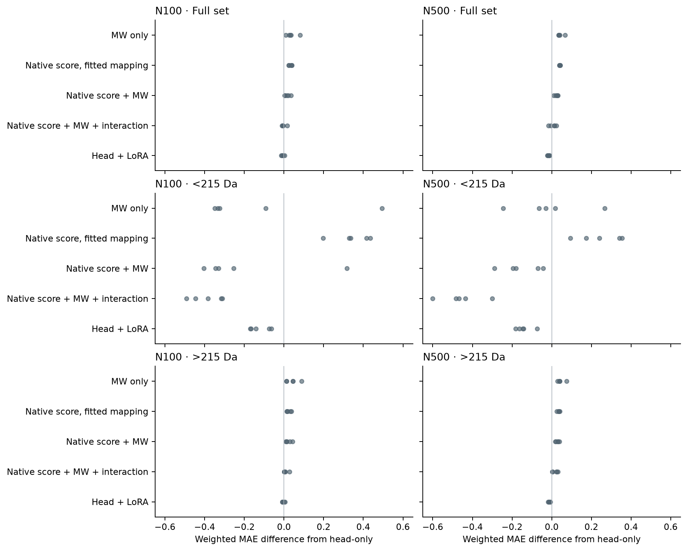

These controls test whether a simple MW-aware induction mapping can explain the adaptation gains. They do not test whether native Nesso correctly measures binding affinity.
A simple native-score × MW interaction reproduces and exceeds the neural small-molecule correction. On compounds below 215 Da, its weighted MAE is 0.773 at N100 and 0.863 at N500, versus LoRA's 1.038 and 1.179. It wins this comparison in every fold at both budgets. Stronger small-subset correction does not establish strong ranking: its Spearman correlations are only 0.112 and 0.083.
Native score adds information beyond MW: the additive model beats MW alone on full-set weighted MAE in all five folds at both budgets. Adding MW to the fitted score-only mapping also improves full-set weighted MAE in all five folds. This supports complementary induction-prediction information, not a verified binding or recruitment mechanism.
The neural models retain an advantage on the larger compounds. At N500, LoRA's >215 Da weighted MAE is 0.544 versus 0.575 for the interaction control, and Spearman is 0.452 versus 0.325. LoRA wins weighted MAE on this subset in all five folds. At N100 the corresponding errors are 0.571 and 0.582, with LoRA winning three of five folds.
Full-set conclusions depend on the metric. At N100, interaction weighted MAE 0.587 is close to LoRA 0.583; at N500 LoRA remains better, 0.561 versus 0.583. The interaction control has slightly better unweighted MAE at both budgets (0.744/0.749 versus LoRA 0.764/0.757), while LoRA has better ranking. Descriptor LightGBM remains the strongest N500 reference in both molecular-weight subsets.
The conspicuous small-molecule correction is not evidence that neural adaptation uniquely learned the binding-to-induction distinction: four regression coefficients can produce a stronger correction. Keep the native binding-related informer separate from an induction-trained mapping. The interaction permits the association between native score and induction to vary with molecular weight; it does not identify the cause as coactivator recruitment. There is still useful predictive information beyond this simple score/MW control in the larger-ligand neural predictions.
Forty CPU fits: four models × five existing folds × two budgets. Models contain an intercept plus MW, native score, both, or both and their product. Native score is the saved 6 − mean(native continuous member values) conversion, not the raw log10 IC50 value. MW is the previously computed identity-SMILES RDKit molecular weight. Centering and scaling use FIT compounds only; the product uses those standardized inputs and spans the same raw bilinear model.
N100 uses 80 FIT and 20 CAL compounds; N500 uses 400 FIT and 100 CAL. All role lists exactly match the saved neural runs. Coefficients use inverse-SE weighted least squares: weight = 1/max(assay SE, 0.1). This minimizes weighted squared error, not weighted MAE or the neural Huber objective, so this is a practical simple-control test rather than an optimizer-matched ablation. No tuning or regularization search was performed. CAL labels only produce the original split-conformal 80%/90% residual intervals.
Each method/budget scores the same 3,344 held-out compounds: 237 below 215 Da, 3,107 above 215 Da, none exactly 215 Da. All predictions are retained without clipping. These are retrospective controls proposed after viewing development results, evaluated on reused development folds, not a new untouched holdout. Fold wins are descriptive; folds are not independent refits from new data.
All 40 fits completed. Cache hashes, exact role membership, full-rank designs, independent normal-equation solutions, and exact JSON-state prediction replay passed. A separate sklearn weighted linear-regression implementation reproduced all 40 saved models within 7.1e-14. Full-set reference metrics reconcile with the earlier report. No GPU, external API or new Nesso inference was used. Per-cell states, fitting/calibration/test IDs, calibration/test predictions, all metrics and source hashes are preserved.
Entries are weighted MAE / MAE / Spearman. Errors lower is better; ranking higher is better.
| Model | Full (3,344) | <215 Da (237) | >215 Da (3,107) |
|---|---|---|---|
| MW only | 0.626 / 0.806 / 0.318 | 1.036 / 1.221 / 0.091 | 0.615 / 0.775 / 0.192 |
| Native score, fitted mapping | 0.622 / 0.825 / 0.377 | 1.520 / 1.747 / 0.043 | 0.597 / 0.754 / 0.299 |
| Native score + MW | 0.606 / 0.777 / 0.421 | 0.951 / 1.122 / 0.079 | 0.596 / 0.750 / 0.322 |
| Native score + MW + interaction | 0.587 / 0.744 / 0.422 | 0.773 / 0.847 / 0.112 | 0.582 / 0.737 / 0.320 |
| Head-only | 0.589 / 0.791 / 0.444 | 1.165 / 1.344 / 0.084 | 0.574 / 0.748 / 0.352 |
| Head + LoRA | 0.583 / 0.764 / 0.494 | 1.038 / 1.183 / 0.086 | 0.571 / 0.731 / 0.410 |
| Native unchanged | 0.627 / 0.914 / 0.387 | 1.834 / 2.069 / 0.028 | 0.595 / 0.826 / 0.308 |
| Frozen-feature ridge | 0.619 / 0.766 / 0.460 | 1.245 / 1.388 / 0.020 | 0.602 / 0.719 / 0.397 |
| Descriptor LightGBM | 0.610 / 0.745 / 0.501 | 1.052 / 1.242 / 0.026 | 0.598 / 0.707 / 0.426 |
| Model | Full (3,344) | <215 Da (237) | >215 Da (3,107) |
|---|---|---|---|
| MW only | 0.620 / 0.820 / 0.342 | 1.308 / 1.522 / 0.140 | 0.602 / 0.766 / 0.216 |
| Native score, fitted mapping | 0.618 / 0.826 / 0.387 | 1.570 / 1.803 / 0.021 | 0.592 / 0.751 / 0.309 |
| Native score + MW | 0.600 / 0.788 / 0.436 | 1.163 / 1.369 / 0.097 | 0.585 / 0.744 / 0.333 |
| Native score + MW + interaction | 0.583 / 0.749 / 0.425 | 0.863 / 0.955 / 0.083 | 0.575 / 0.733 / 0.325 |
| Head-only | 0.577 / 0.793 / 0.473 | 1.320 / 1.508 / 0.079 | 0.557 / 0.739 / 0.387 |
| Head + LoRA | 0.561 / 0.757 / 0.529 | 1.179 / 1.338 / 0.069 | 0.544 / 0.712 / 0.452 |
| Native unchanged | 0.627 / 0.914 / 0.387 | 1.834 / 2.069 / 0.028 | 0.595 / 0.826 / 0.308 |
| Frozen-feature ridge | 0.534 / 0.667 / 0.608 | 0.924 / 0.974 / 0.104 | 0.524 / 0.643 / 0.545 |
| Descriptor LightGBM | 0.501 / 0.600 / 0.657 | 0.604 / 0.673 / 0.218 | 0.498 / 0.594 / 0.593 |
